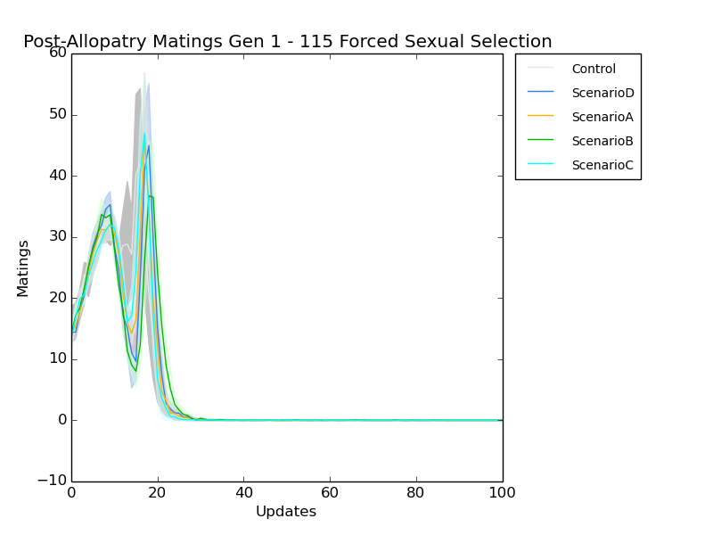
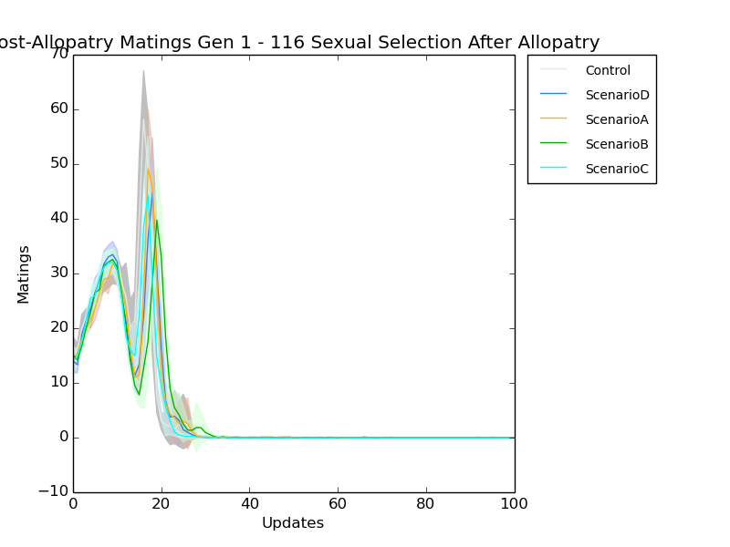
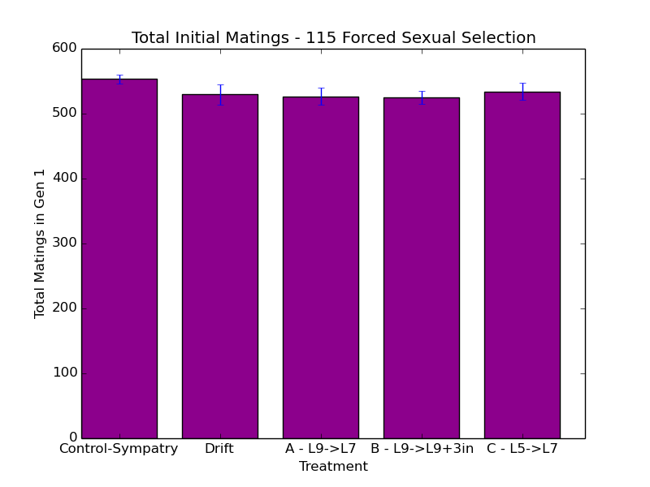
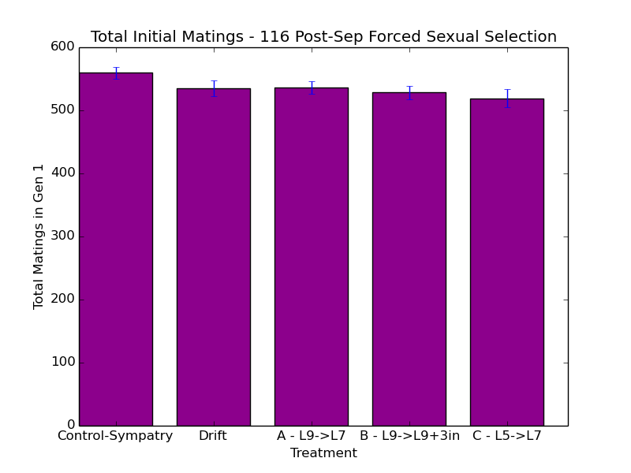

make them speciate (using the previous regime that enforces speciation).
- re-evaluate the sympatric speciation.
- charles suggestion: make half the spectrum of be harmful to using mate choice against.
- make crossover tougher.
- set up an asexual population (zero points of crossover) and then do the crossover for the test. should get something that can help us confirm that the system is working. BLAH
- redo carlos's work in a different substrate
http://scholar.google.com/citations?user=Iin714UAAAAJ&hl=en&oi=sra
|
The role of standing genetic variation in adaptation of digital organisms to a new environment CJR Anderson
Artificial Life 13, 3-10
|
2012 |
|
|
Ecological and Mutation-Order Speciation in Digital Organisms CJR Anderson, L Harmon
The American Naturalist 183 (2), 257-268
|
Ok, I've got a working dist_run replacement.
https://github.com/voidptr/dist_qsub
it works using the same features as dist_run for reading run_list files. it's not complete, as in it doesn't do check pointing, but the array thing lets you exceed the quota. YAY.
Have a chance to do some work. Yay! All my 115 and 116 runs are completed. Time to do some data analysis.
Also, I've started using tmux! Better than screen, and also the set mouse=a thing for vim is Aaaaaahhhhmazing.
caninoko@dev-intel14:~/mate_discrimination/output/116_ExperimentalPipeline_SexualSelectionAfterSep$ gunzip */*.cfg.gz
caninoko@dev-intel14:~/mate_discrimination/output/116_ExperimentalPipeline_SexualSelectionAfterSep$ for k in *; do if [ -e $k"/"*_step3/mates ]; then echo $k; cd $k/*_step3/mates/; pwd; rm matings_timeseries.dat; for i in {0..250}; do echo $i; awk -v i="$i" '{if (($13 == 1) && (($11 > 1799 && $24 < 1800) || ($11 < 1800 && $24 > 1799))) print $2,$3,$4,$5,$8,$11,"--->",$15,$16,$17, $18,$21,$24}' <(gzip -dc mates-$i"."dat*) | wc -l >> matings_timeseries.dat ; done; cd ../../../; fi ; done caninoko@dev-intel14:~/mate_discrimination/output/116_ExperimentalPipeline_SexualSelectionAfterSep$ python ../../../research_scripts/quickplot.py --error --end_at 100 -x Updates -y Matings -t "Post-Allopatry Matings Gen 1 - 116 Sexual Selection After Allopatry" 116_matings_100u_postallopatry_ss_gen1 \ matings_timeseries.dat 1 "Ctrl_*/*_step3/mates/" Control \ matings_timeseries.dat 1 "ScenD_*/*_step3/mates/" ScenarioD \ matings_timeseries.dat 1 "ScenA_*/*_step3/mates/" ScenarioA \ matings_timeseries.dat 1 "ScenB_*/*_step3/mates/" ScenarioB \ matings_timeseries.dat 1 "ScenC_*/*_step3/mates/" ScenarioC
caninoko@dev-intel14:~/mate_discrimination/output/115_ExperimentalPipeline_ForceSexualSelection$ for k in *; do if [ -e $k"/"*_step3/mates ]; then echo $k; cd $k/*_step3/mates/; pwd; rm matings_timeseries.dat; for i in {0..250}; do echo $i; awk -v i="$i" '{if (($13 == 1) && (($11 > 1799 && $24 < 1800) || ($11 < 1800 && $24 > 1799))) print $2,$3,$4,$5,$8,$11,"--->",$15,$16,$17, $18,$21,$24}' <(gzip -dc mates-$i"."dat*) | wc -l >> matings_timeseries.dat ; done; cd ../../../; fi ; done caninoko@dev-intel14:~/mate_discrimination/output/115_ExperimentalPipeline_ForceSexualSelection$ python ../../../research_scripts/quickplot.py --error --end_at 100 -x Updates -y Matings -t "Post-Allopatry Matings Gen 1 - 115 Forced Sexual Selection" 115_matings_100u_postallopatry_gen1 \ matings_timeseries.dat 1 "Ctrl_*/*_step3/mates/" Control \ matings_timeseries.dat 1 "ScenD_*/*_step3/mates/" ScenarioD \ matings_timeseries.dat 1 "ScenA_*/*_step3/mates/" ScenarioA \ matings_timeseries.dat 1 "ScenB_*/*_step3/mates/" ScenarioB \ matings_timeseries.dat 1 "ScenC_*/*_step3/mates/" ScenarioC

caninoko@dev-intel14:~/mate_discrimination/output/115_ExperimentalPipeline_ForceSexualSelection$ for k in *; do if [ -e $k"/"*_step3/mates ]; then echo $k; cd $k/*_step3/mates/; pwd; python ~/research_scripts/common/aggregate_file.py --sum matings_timeseries.dat > sum_matings_gen1.dat ; cd ../../../; fi ; done root="Ctrl"; rm $root"_"sum_matings_gen1.dat; for k in $root"_"*; do if [ -e $k"/"*_step3/mates ]; then echo $k; cd $k/*_step3/mates/; pwd; cat sum_matings_gen1.dat >> ../../../$root"_"sum_matings_gen1.dat ; cd ../../../; fi ; done root="ScenA"; rm $root"_"sum_matings_gen1.dat; for k in $root"_"*; do if [ -e $k"/"*_step3/mates ]; then echo $k; cd $k/*_step3/mates/; pwd; cat sum_matings_gen1.dat >> ../../../$root"_"sum_matings_gen1.dat ; cd ../../../; fi ; done root="ScenB"; rm $root"_"sum_matings_gen1.dat; for k in $root"_"*; do if [ -e $k"/"*_step3/mates ]; then echo $k; cd $k/*_step3/mates/; pwd; cat sum_matings_gen1.dat >> ../../../$root"_"sum_matings_gen1.dat ; cd ../../../; fi ; done root="ScenC"; rm $root"_"sum_matings_gen1.dat; for k in $root"_"*; do if [ -e $k"/"*_step3/mates ]; then echo $k; cd $k/*_step3/mates/; pwd; cat sum_matings_gen1.dat >> ../../../$root"_"sum_matings_gen1.dat ; cd ../../../; fi ; done root="ScenD"; rm $root"_"sum_matings_gen1.dat; for k in $root"_"*; do if [ -e $k"/"*_step3/mates ]; then echo $k; cd $k/*_step3/mates/; pwd; cat sum_matings_gen1.dat >> ../../../$root"_"sum_matings_gen1.dat ; cd ../../../; fi ; done
caninoko@dev-intel14:~/mate_discrimination/output/115_ExperimentalPipeline_ForceSexualSelection$ python ~/research_scripts/graph_generation/bar_chart_from_csv.py -x Treatment -y "Total Matings in Gen 1" -t "Total Initial Matings - 115 Forced Sexual Selection" --xticks="Control-Sympatry,Drift,A - L9->L7,B - L9->L9+3in,C - L5->L7" --error 115_sum_matings_gen1.png \ Ctrl_sum_matings_gen1.dat \ ScenD_sum_matings_gen1.dat \ ScenA_sum_matings_gen1.dat \ ScenB_sum_matings_gen1.dat \ ScenC_sum_matings_gen1.dat
Edit 10/27. Somehow I lost a bunch of my notes in this notebook. I think it's because my browser had crashed, and I hadn't implemented autosaving. :/ This is now corrected.
